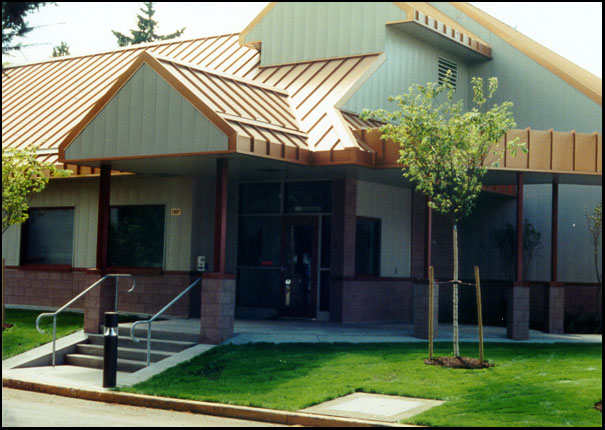
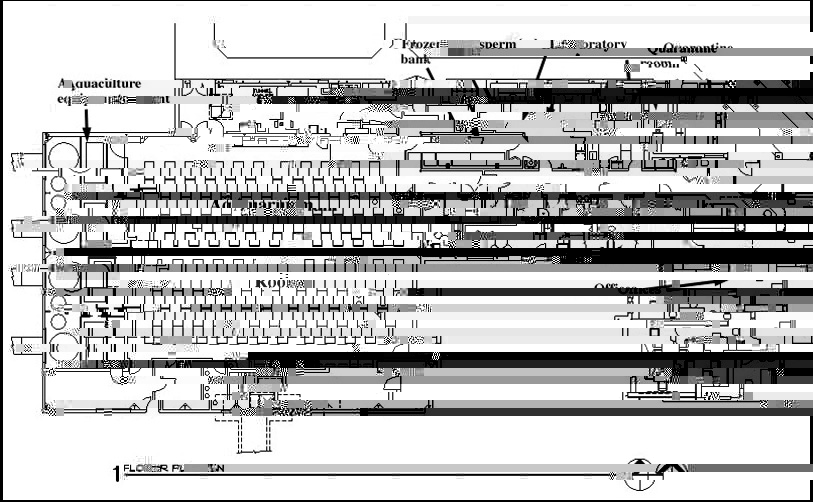
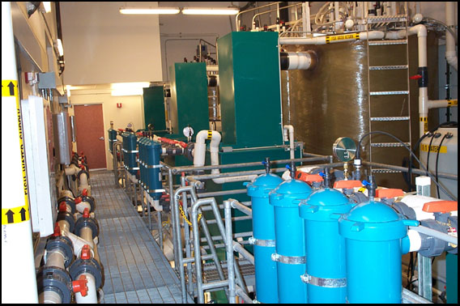
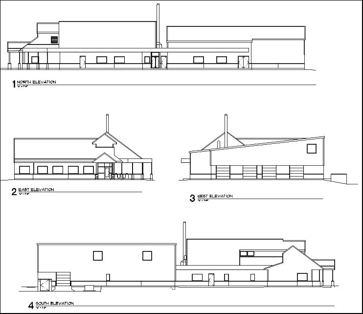

The Resource Center is a dedicated building of approximately 10,000 square feet located on the University of Oregon campus.

The Resource Center includes an aquarium facility for live stocks, a quarantine room for receiving fish from outside laboratories, a frozen sperm bank, and a diagnostic and research laboratory.

Aquaculture equipment room
